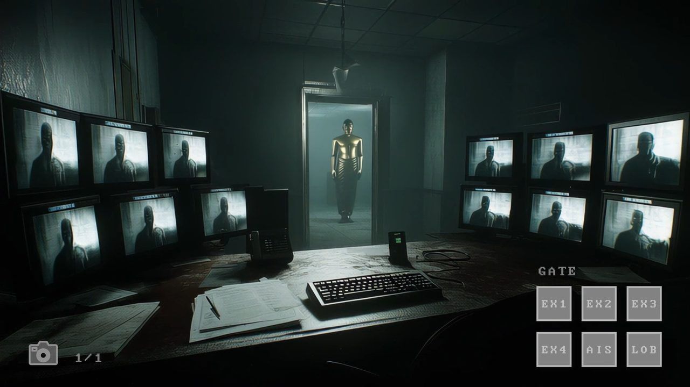
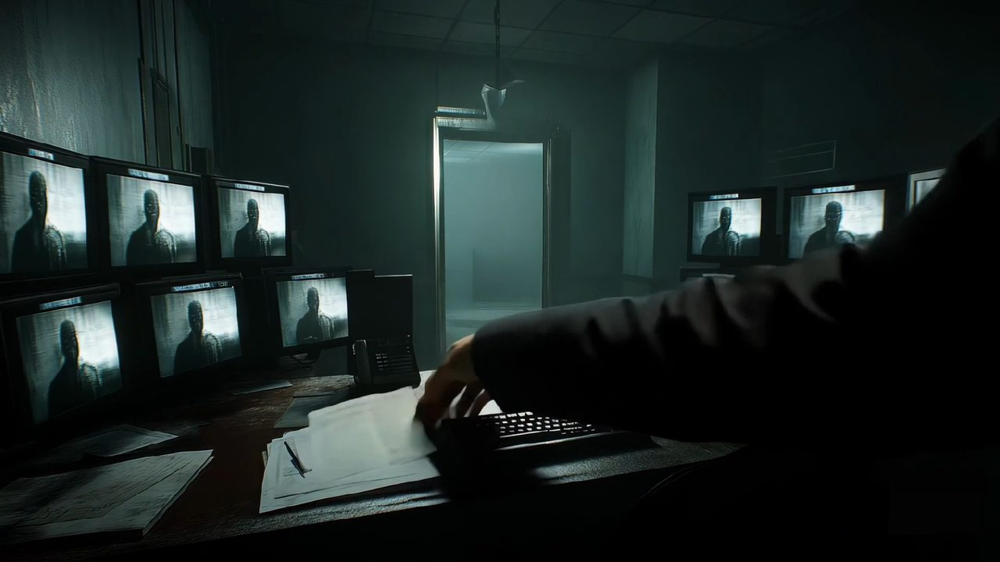
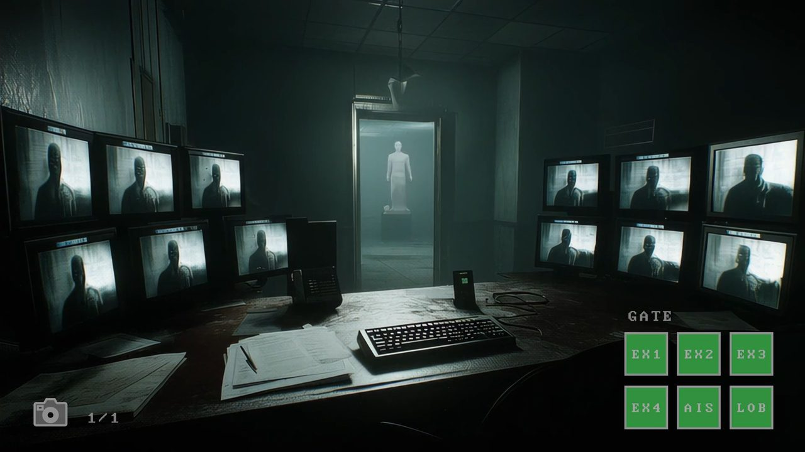
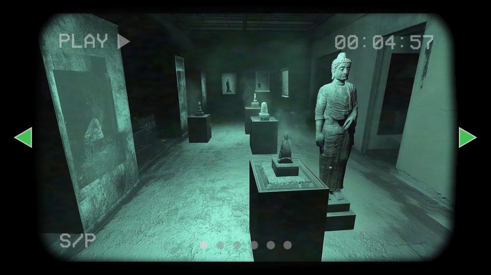

AI 단편 · 2025
수장고

줄거리
실종 사건과 괴담이 끊이지 않는 박물관. 기자인 주인공은 진실을 캐려고 야간 경비원으로 위장 취업합니다. 밤이 되자 지하 수장고에서 풀려난 석상과 불상이 전시실과 복도를 지나 경비실로 다가옵니다. 주인공은 CCTV 화면으로 유물의 움직임을 쫓으며 아침까지 살아남아야 합니다.
저희 팀은 이 이야기를 관찰형 생존 공포 게임처럼 연출했습니다. 한 번에 하나만 닫을 수 있고 5초 뒤 다시 열리는 보안 게이트, 필름이 한 장뿐인 폴라로이드, 가까워질수록 커지는 돌 끌리는 소리와 염불 소리까지 규칙으로 정해 두고 그 한 밤을 영상으로 만들었습니다.


